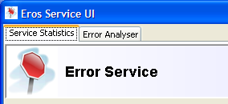

Looking around the serviceUI
There are two tabbed panes in the Eros ServiceUI. The first pane shows the current instance statistics

The second tab shows the Error Analyser. The error analyser is split into 3 parts
Breakdown
The main area of the analyser, shows a set of cumulative bar graphs, which display the relative breakdowns of all the application logs

Moving the mouse over one of the sections in the bar will show the name of the application set, the number of logs and the relative percentage of the error set
Clicking the mouse on a section will filter all the records to those in that section. The other bars will also recalculate and redisplay.
Error List
Underneath the breakdown panel is a table with some of the information for the error records.

Clicking on one of the rows will change the tab to show the error details.